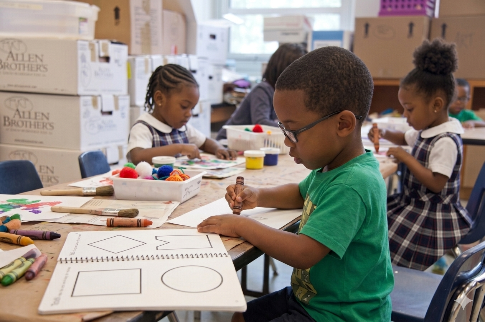

Our Story
Excellence. Character. Purpose.
To provide quality, holistic secondary education that equips every student with academic excellence, moral integrity, and the skills to thrive in a dynamic global society.
To be Benin City's foremost secondary school — recognised for producing purpose-driven, disciplined graduates who lead with knowledge and virtue.
Integrity · Excellence · Discipline · Innovation · Service to Community
Our History
Founded in 2009, Jaasiel Education Centre began as a small but determined institution in Benin City, Edo State, with a vision to deliver world-class secondary education rooted in Nigerian values. Over fifteen years, we have grown from 80 students to over 1,200 and from a single block to a fully equipped campus.
Our motto — "Accurate Knowledge is a Virtue" — guides everything we do. We believe that truth and knowledge pursued with discipline produce extraordinary human beings.

Our Leadership
20+ years in education. PhD Education Management, University of Lagos.
Specialist in curriculum development with 15 years experience.
Expert in school management and student welfare programmes.
MSc Chemistry. Passionate about practical STEM education.
Join a community that invests in every student's potential.